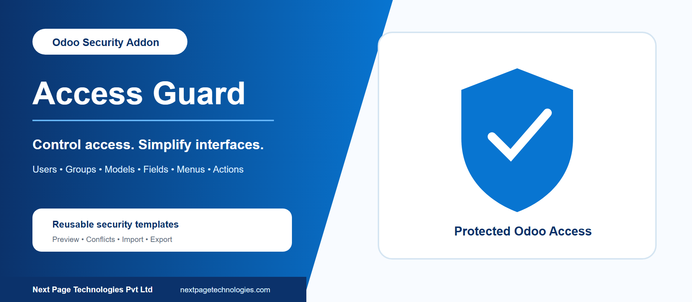
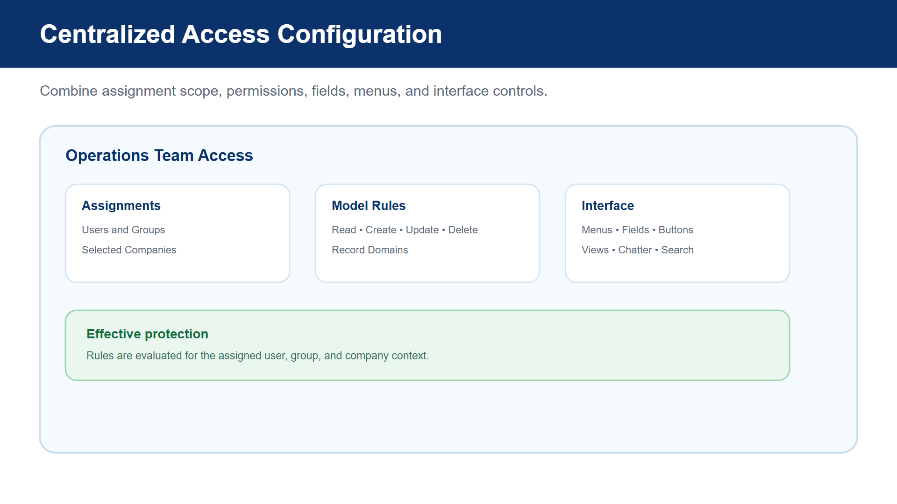
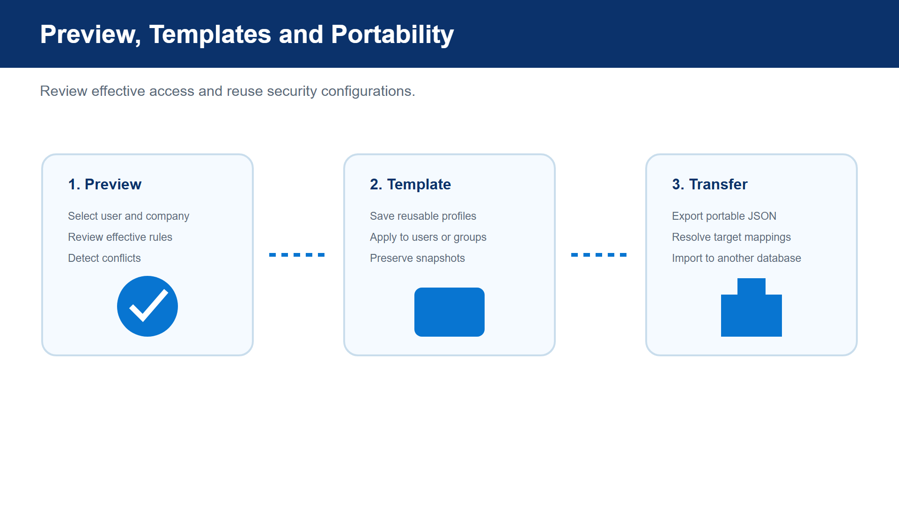
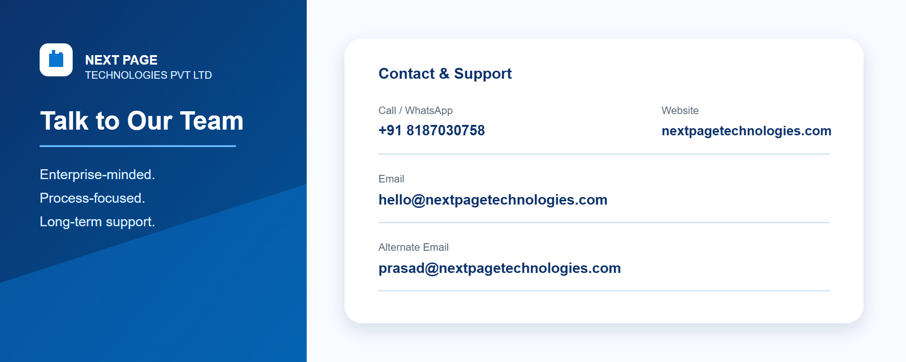

Configure user- and group-based Odoo access guardrails from one administration workspace. Control record operations, visible menus, fields, buttons, views, chatter tools, search features, and other interface capabilities while preserving reusable rule templates.
Access Guard applies security and interface rules to selected users or groups, optionally limited by companies. Administrators can combine model permissions, record domains, field behavior, menu visibility, action restrictions, and global controls in a single access rule.
Assign rules to individual users or groups and scope them to selected companies.
Control read, create, update, and delete operations and apply record-filtering domains.
Hide menus, buttons, tabs, smart buttons, kanban links, reports, actions, and selected view modes.
Make fields invisible, read-only, or required and restrict relational create, edit, and external-link options.
Control chatter actions, import, export, spreadsheets, custom filters, grouping, search panels, favorites, developer mode, and login.
Preview effective access, save reusable templates, detect conflicts, and import or export portable configurations.
Combine assignment scope with model permissions, field behavior, menus, actions, chatter, and global interface controls in one rule.

Preview effective rules for a user and company, identify conflicts, save reusable templates, and move portable access configurations between compatible databases.

Contact Next Page Technologies Pvt Ltd for implementation or support assistance.

Next Page Technologies Pvt Ltd
https://nextpagetechnologies.com